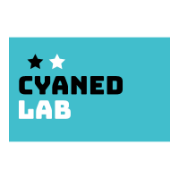

- Johnny Mercer
This website is now under construction starting August, 2020. As long as you are seeing this, the content of this site will still change fairly rapidly and frequently. Therefore, your feedback will be very much appreciated, if you have any idea to share, please contact me via Instagram.
Preface
Welcome. I’m Shu. Glad you came.
“Non sunt multiplicanda entia sine necessitate.” I believe in Occam’s Razor, so I built this site in the simplest way possible to only show the essentials for you to know about me, all the cool things I’m into, and, hopefully, to discover any resemblance between us, so that we could be friends.
Life is short, so I try to spend my time wisely, and look forward to experiencing different forms of “being a human”: as a mathematician, an engineer, a programmer, a dancer, a singer, a photographer, a novelist, a guitar player, a producer, a traveler, a snowboarder, and so many others. I’m actively exploring my interests and refuse to settle with anything, even those I’ve been always good at.
The name “CYANED” comes from cyan, the color of shallow water over a sandy beach, and the independent record label of Frank Ocean (BLONDED) - he’s the inspiration of all my creativity and the one who taught me how to be honest with myself.
Now, maybe it’s better to spread things out a bit so you can walk around on this spacy canvas and see if anything catches you.

Musical & Visual
Music has always been the backbone of my energy - I need good tracks much more than a morning coffee shot. My interests cover a wide range of sounds, from the old-school Jazz by Keith Jarrett to the most aggressive experimental by Arca, but in general, I focus mainly on Contemporary R&B and Alternative Rock, which I also learn to comprehend further and write some of my own.
I was raised in a family of western pop music fans - in my dad’s study room there are tons of vinyl records and CDs by Michael Jackson, Madonna, The Beetles, and Eagles, and on the CD player screen of his old S-class, the legendary Bucharest Concert had been played more than hundreds of times, if not thousands - that’s also where I learned some of MJ’s iconic moves (i.e. Billie Jean Solo and Moon Walk) and performed them in front of thousands of audiences in my high school and college.
The golden time of Dance Pop and Neo Soul filled my childhood and adolescence. In college I was then greatly inspired by Kanye West (just like Elon Musk) and started to fall in love with modern music production techniques. With the splendid production of the one and only MBDTF teaching me how soundtracks should be created and polished, the alternative classic Blonde/Endless opened a whole new world of making emotional bond between the artist and the audiences. Now to me music creation is more than showing off complex chord progressions - it’s more like “feeling each other by hearts”.
My idea of integrating musical experience with visual arts originally came from the luxuriant Bon Iver - they use splendid visual arts to magnify the degree of joy brought by their extremely well-crafted tracks. Therefore, besides making Dream Pop snippets, I’m also exploring ways of combining video cuts with songs - a glimpse of my original work below.
“The Gyo-en Love Story” (Short Ver.)
Musical: Outro of “Fold (the Love)”
Visual: Re-edit of “The Garden of Words”“At the Mercy of You” (Short Ver.)
Musical: Bridge of “Deathwish (Remixed)”
Visual: Re-edit of “Your Name”
I play electric guitar, keyboard, and mess with synthesizers a bit. In terms of music tech, my fav has always been Logic, LilyPond, and Sonic Pi. I’m now working on a mixtape/EP under the project name “C2CY” (pronouced as “see both sides”, including all songs shown above). For more details about my work in musical and visual production in general, please see the channel “Aesthetics”.

Programming
Pending, come back when you cannot debug your code.
Research
Pending, come back when you are on a train and have nothing to do.
Visual Arts
Pending, come back when you are tired of your wallpaper.
Snowboard
Pending, come back when it’s snowing.
Tennis
Pending, come back when you got hit by a tennis ball.
Aircrafts
Pending, come back when you are onboard but the wifi sucks
Video Gaming
Pending, come back when your controller’s battery is dead.